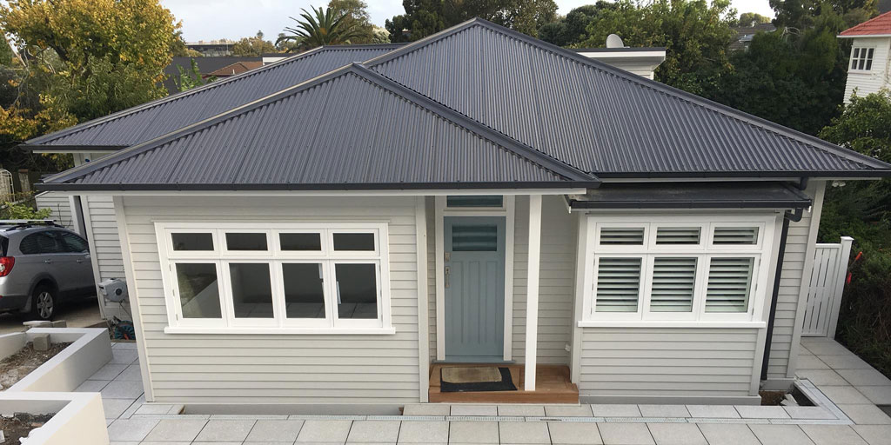
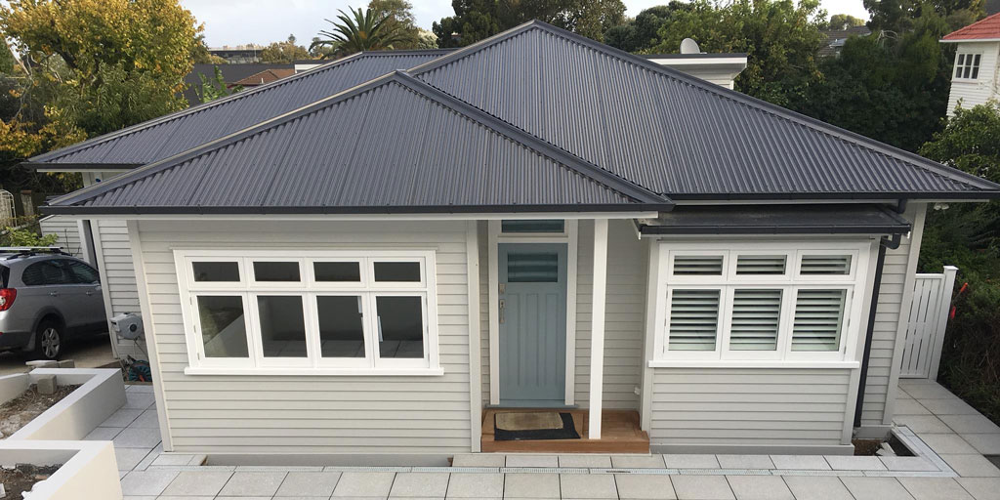

RE-ROOFING
Residential Re-roofing specialists
Throughout the lifetime of your home, it’s likely you’ll need to repair or replace your roof to minimise risk any major damage to your property. At Roof Me, we specialise in metal to long run metal re-roofing and concrete to metal re-roofing using quality COLORSTEEL® and ColorCote® products in assorted grades, profiles and colours. These products have been built to deal with New Zealand’s harsh weather conditions, and selected by us for their performance, durability and modern finish. Our experienced team will help you understand what will work best for the requirements of your property, so you can choose products that achieve durable, long-lasting results. When combined with our high standard of workmanship, you can be confident you have a roof designed to withstand whatever the Auckland weather throws at it. Long run comes in a variety of profiles and colour choices, and results in a stylish and dramatically improved finish. Find out more about these roofing products or take a look at some of our re roof projects we’ve completed in our roofing projects gallery. Roof Me us based in Whangaparaoa on the Hibiscus Coast, but services homes throughout the North Shore, and Auckland. How do you know it’s time to re-roof your property? Auckland’s ever-changing weather conditions – like strong sun, damp weather and coastal storms – can begin to take its toll on your roof, undermining performance and leaving it looking tired and damaged. Re-roofing isn’t just about improving the look of your home, but also about ensuring it remains a safe, dry and healthy place to live. Many older roofs were fitted without underlay (roofing paper) and just the addition of this also will achieve a warmer home. This may also be a good time to insulate (which we can carry out and organise) because the roof space is easily accessed at this time. In some cases, the wooden purlins that are part of the substrate structure to which the roofing material is attached can be rotten and may need to be replaced before a new roof is fitted. Doing so will ensure a safe and secure hold for your new roof. Keep and eye out for these signs that your roof needs to be replaced:
 
